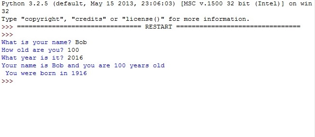
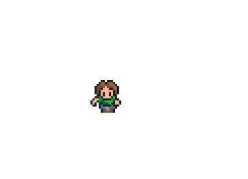
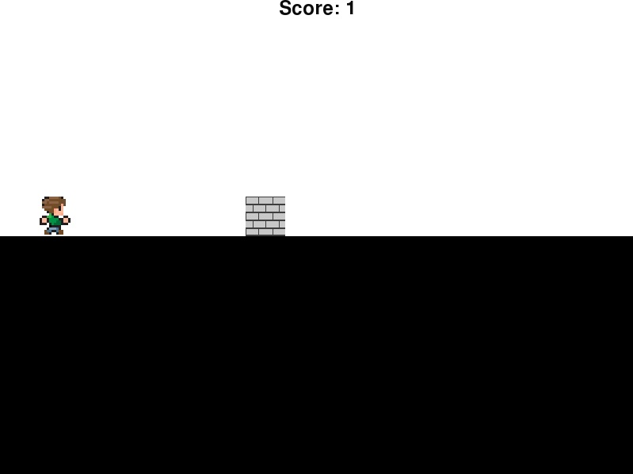
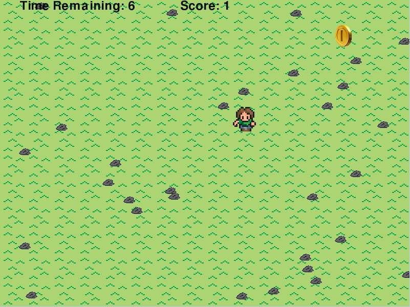
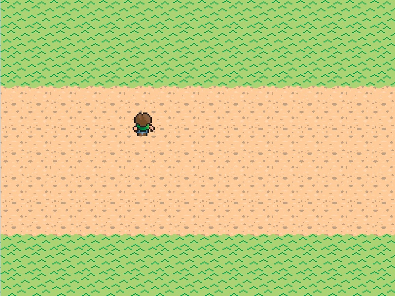
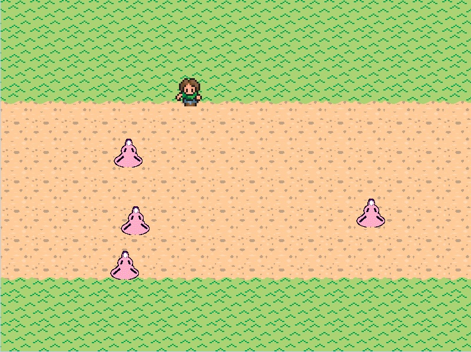

Python Basics
 
Description
In Python Basics, we learned how to write a class that creates an object and moves it around, and how to write a program that takes user input and prints the results of several calculations.
Concepts Learned:
- Create a class-Classes make storing data easier, and when you want to store data together. It starts with the word class and the name of the class followed by a colon; Classes start with a capital letter.
- Using methods-We used methods to reuse code. All methods require def, a name, parenthesis, and a colon. Each method name must also be different.
- Comments-Python Comments always have a pound sign in front of it, making the text red. It can be used as a “reference” or directions but the system skips over the comment.
Python Unit 2

Description
In Python Unit 2, we learned how to use if statements, if-else statements, and nested if statements in our code.
Concepts Learned:
- If statements-We used if statements to run a code only if a certain condition was met. If it does not meet the condition it will skip the code; the code inside an if statement must be indented.
- Relational Operators-They compare to values and return true or false. For example, == determines if two values are equal while != determines if they are not equal. > and < determine if a value is greater or less than another.
- If else statements-If else statements allow a different code to run if the statement is false and the conditions are not met.
- Elif statements-If-elif statements determine which code to run based on which conditions are met.
Python Unit 3

Description
In Python Unit 3, we learned how to use for loops, while loops, and nested loops in the different lab assignments.
Concepts Learned:
- Loops-We used loops to repeat code as long as a condition was met.
- For loops-For loops run a set number of times. If you are given for y in range(num):, it repeats the loop until y is no longer less than num.
- Break-Break allows the code to stop a loop early.
- While loops-While loops repeat the code as long as a condition is true. Pygame uses an infinite while loop to change the screen repeatedly.
Python Unit 4
 
Description
In Python Unit 4, we learned how to use lists, loops, and if statements.
Concepts Learned:
- Lists-You can use lists to use one identifier to group similar items together. You can also add data to the end of the list by using the append method. Using the insert method will allow you to add data in the middle of a list and using the remove method allows you to remove data from a list.
- Costume changes-You can use lists to change a person’s costume. In the costume change lab, we wrote a program that changes the person’s image based on the direction he’s moving.
- Dodging enemies-In the dodging enemies lab, we used lists, loops, and ifs. We had an enemy and an enemies file; the enemies file included the list of the location of the enemies and the methods.